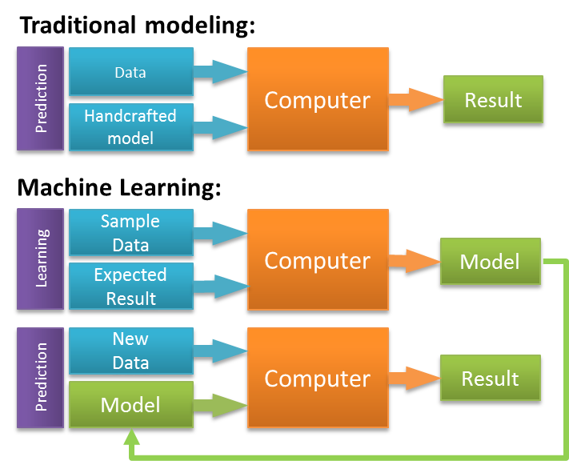

If you are not too familiar with how machine learning works, the fundamental idea is that you build a model on observed “training” data and use it to predict for unknown cases of the same event. In this case the “event” is the outcome of a follow-up building inspection. By training a model on past inspections for which we know the outcome, we can figure out exactly which factors will help to predict the outcome.
 Source: zeiss.com
This diagram shows how machine learning differs from traditional modeling. When you train machine learning models, you generate sets of rules and weights that you in turn apply to the data you would like to predict for. In order to understand how useful our model was, we needed to see how well it predicted for data that it had not been trained on. We randomly subset the dataset, allocating 60% of all inspections to the training set and the remaining 40% to the validation (or test set). We used repeated cross-validation to train each model on the training set. This means that each time we trained a model, we repeatedly subset our data into smaller train-test categories, and averaged the results.
After compiling a large dataset, engineering a diverse set of features, and separating important from unimportant variables, the next step is test a variety of different models. However, before training models, we needed to partition our dataset in training and test sets.
We randomly subset the data, allocating 60% of the inspections to a training set and the remaining 40% to a test set:
# remove rejected vars
d <- ds %>%
select(-one_of(rejected_vars))
# partition dataset
set.seed(6789)
inTrain <- createDataPartition(d$o.failed.n, p = 0.6, list = FALSE)
train <- d[inTrain, ]
valid <- d[-inTrain, ]
# list of predictor variables
pred_vars <- setdiff(names(d), c(non_mod_vars, "o.failed.n", "o.failed.f"))When training the data, we used repeated cross-validation to train each model on the training set. This means that each time we trained a model, we repeatedly subset our data into smaller train-test categories, and averaged the results to get goodness of fit metrics that helped us evaluate the model. Once we settled on final models, we used them to predict for the 40% test set. This is important because the test set is made of data that the model “had not seen.” If our goodness-of-fit metrics were worse on the test set than they were in training, this would be an indication that the model was overfit.
We built all of our models for this project using h2o. H2O is a free, open-source, machine learning platform. H2O makes it possible to run a number of different machine learning algorithms on a Java virtual machine. It creates multi-node clusters which enable you train machine learning models much faster than you would be able to otherwise. Before loading any data or training models, you need to initialize an h2o cluster:
# initialize h2o cluster
localhost <- h2o.init(nthreads = -1, max_mem_size = "8G")H2O maintains APIs for R, Python and Scala. Using the R bindings, we are able to easily transition between normal R functionality and high-performance h2o modeling within an R script. In addition to its APIs, h2o has a GUI called “Flow” that runs in a web browser. You can open view it by simply pointing your browser at the appropriate port. The resulting dashboard comes in handy for quickly and easily viewing training results from h2o models.
# open flow in web browser
paste0("start http://localhost:", localhost@port) %>%
shell()Once you’ve initialized a cluster, you can simply convert an R data frame to an h2o frame using the as.h2o() function. You can then use these new frames as inputs to build h2o machine learning models.
# load data into h2o
d.h2o <- as.h2o(d)
train.h2o <- as.h2o(train)
valid.h2o <- as.h2o(valid)
# define parameter search criteria grid
search.criteria <- list(
strategy = "RandomDiscrete",
max_runtime_secs = 900,
stopping_rounds = 5,
stopping_metric = "AUTO"
)
# subset variables into different categories
fact_vars <- getVarNames(names(train.h2o), "f.")
vi_vars <- getVarNames(names(train.h2o), "vi")
cont_vars <- getVarNames(pred_vars, c("s."))The process of selecting a model resembles a type of feedback loop. We tried implementing a series of different model types. For each model type we experimented with different collections of variables. We used random hyper-parameter grid searches to twist all of the “knobs” that one uses to control exactly how the model operates. By experimenting with different combinations of hyper-parameter settings we could eventually hone in on the set that resulted in the highest cross-validated accuracy. Where appropriate, we tried “interacting” categorical variables, which means that we created dummy variables for various combinations of binary factors. Finally, we experimented with ensemble models that combined predicted probabilities from multiple different sub-models. These ensembles are useful when the sub-models predict differently for the same response variable. However, in our case the correlation between the sub-model predicted probabilities was too strong for the ensembling to make much of a difference.
The first and least powerful model we tried was the logistic regression (glm). This model uses a “link” function to implement a linear model for a binary outcome. As opposed to the latter two models, the glm model can take categorical variables. Therefore we needed to specify a set of predictors that included the original factor variables as opposed to the one-hot encoded numerical features that we created in the feature engineering section. The logistic regression is good because it is fast and simple. It does not have many hyper-parameters to tune. In this case, the only hyper-parameter that we tuned was the alpha value. This hyper-parameter controls the regularization penalty in the model. We performed a hyper-parameter “grid” search for alpha. However, “grid” in this case is slightly misleading given that we were searching over an only one-dimensional vector of alpha values.
# extract only one spatial var to avoid multicollinearity
glm_pred_vars <- c(fact_vars, cont_vars, vi_vars, "e.avgDists.rep.n10")
# specify alpha values
alphas <- seq(0, 1, 0.1)
# Parameter tuning:
glm.tune.grid <- h2o.grid(
algorithm = "glm",
hyper_params = list(alpha = alphas),
y = "o.failed.f",
x = glm_pred_vars,
grid_id = "glm.tune.grid",
training_frame = train.h2o,
nfolds = 10,
lambda_search = TRUE,
family = "binomial",
standardize = TRUE
)
# get results/predicitons from fina glm model
glm_results <- get_from_grid("glm.tune.grid", valid.h2o)
# save results
glm_mod <- glm_results$fit.glm.tuned.h2o
save(glm_mod, file = "output/glm_final_mod.Rdata")load("../output/data/glm_final_mod.Rdata")# summary
glm_mod@model$model_summary## GLM Model: summary
## family link regularization
## 1 binomial logit Elastic Net (alpha = 0.25, lambda = 2.367E-4 )
## lambda_search
## 1 nlambda = 100, lambda.max = 0.1594, lambda.min = 2.367E-4, lambda.1se = 0.00167
## number_of_predictors_total number_of_active_predictors
## 1 60 48
## number_of_iterations training_frame
## 1 100 trainWe used AUC as the criteria for choosing an optimal model during the hyper-parameter search. This means that the iteration with the highest AUC occurred on an elastic net model with an alpha value of 0.25.
# cross validation metrics
head(glm_mod@model$cross_validation_metrics_summary)## Cross-Validation Metrics Summary:
## mean sd cv_1_valid cv_2_valid cv_3_valid
## accuracy 0.6360638 0.014634479 0.62089276 0.61272216 0.6720799
## auc 0.7356134 0.0061625033 0.7285895 0.7212438 0.7515902
## err 0.3639362 0.014634479 0.37910727 0.38727784 0.32792005
## err_count 1164.4 48.227795 1223.0 1242.0 1050.0
## f0point5 0.59301764 0.01118286 0.5873016 0.5732484 0.6162297
## f1 0.6757899 0.0049606967 0.6792552 0.6666667 0.6833534
## cv_4_valid cv_5_valid cv_6_valid cv_7_valid cv_8_valid
## accuracy 0.62701863 0.64358896 0.6100548 0.64715344 0.6543512
## auc 0.734209 0.72699094 0.7403797 0.74182355 0.7344172
## err 0.37298137 0.35641104 0.3899452 0.35284656 0.34564885
## err_count 1201.0 1148.0 1210.0 1097.0 1132.0
## f0point5 0.58724064 0.59767514 0.5748353 0.6105295 0.60343045
## f1 0.6815168 0.66935486 0.6719089 0.68861765 0.6735871
## cv_9_valid cv_10_valid
## accuracy 0.6580523 0.6147239
## auc 0.74527806 0.73161197
## err 0.34194767 0.38527608
## err_count 1085.0 1256.0
## f0point5 0.60878885 0.57089657
## f1 0.67679477 0.6668435The second output shows model performance metrics across each of the 10 cv folds. The low AUC standard deviation (0.006) indicates that the model performed consistently across many random samples and that we were not overfitting the training data.
One of the shortcomings of a logistic regression model (at least as compared to the tree-based models we’ll discuss later on), is that it does not automatically incorporate interaction among predictor variables. One way to add this element to a glm model is to use interaction terms. Here’s another of Chris Albon’s flashcards to tell us about them.
Interaction terms allow you to account for the predictive effect of two different categorical features occurring in conjunction. For example, if the combination of inspections that were high priority and also had a previous exterior violation were particularly likely to fail, and interaction term could pick up that signal.
We interacted all of our categorical variables to create new interaction features. We then regressed them onto failure outcomes and removed the variables that proved not to be significant:
# get interaction variables for train/test sets
pairwise <- getInteractionVars(train.h2o, realf, bind = FALSE)
int_train <- h2o.cbind(train.h2o, pairwise)
int_valid <- getInteractionVars(valid.h2o, realf)
# glm mods with variable subsets
# continuous variables
cont_mod <- h2oLogMod(c(cont_vars, vi_vars), "glm_cont")
# interaction variables
int_mod <- h2oLogMod(names(pairwise), "glm_int", training_frame = int_train)
# all predictor variables
all_preds <- c(names(pairwise), fact_vars, vi_vars, cont_vars)
all_mod <- h2oLogMod(all_preds, "glm_all", training_frame = int_train)
# generate a list of all glm mods
all_glm_mods <- list(
list("glm", glm_results$fit.glm.tuned.h2o),
list("glm_cont", cont_mod),
list("glm_factor", int_mod),
list("glm_interaction", all_mod)
)
# predict using each of the four models
all_glm_results <- llply(all_glm_mods, getPredictions, validation_frame = int_valid) %>%
# append them to each other
do.call("cbind", .) %>%
# calculate additional ensemble variables
mutate_if(is.factor, factor_to_numeric) %>%
mutate(result = valid$o.failed.n,
vote = glm.predict + glm_cont.predict + glm_factor.predict + glm_interaction.predict,
vote_pred = ifelse(vote > 2, 1, 0),
correct = ifelse(vote_pred == result, 1, 0),
mean_vote = (glm.p1 + glm_cont.p1 + glm_factor.p1 + glm_interaction.p1) / 4)We tried several different ensembles of glm models with interaction terms but found that adding these variables only slightly improved performance over the baseline logistic regression.
After running training a logistic regression model, we moved on two try out two different decision tree-based algorithms. The first of these was a Gradient Boosting Machine (GBM) model. This is an ensemble method, meaning it combines the outputs of a number of different decision trees. It fits a series of deeper learners to the data and then goes “deeper” by fitting additional trees to the residuals. This technique makes it possible to pick up patterns in the data that the logistic regression is unable. However, it also makes it much easier to overfit to the training data.
You can avoid overfitting by tuning hyper-parameters such as max_depth, which controls the maximum number of nodes allowed in any decision tree within the model. We created a hyper-parameter grid that included sample rate (sample_rate), column sample rate (col_sample_rate), and learning rate (learn_rate) in addition to tree depth.
# Tuned parameters:
# define hyperparameter grid
gbm.grid <- list(
learn_rate = seq(.03,.05,.01),
max_depth = c(8:10),
sample_rate = seq(0.7, 1.0, 0.1),
col_sample_rate = seq(0.4, 1.0, 0.1)
)
# search parameter grid
gbm.tune.grid <- h2o.grid(
algorithm = "gbm",
grid_id = "gbm.tune.grid",
y = "o.failed.f",
x = pred_vars,
hyper_params = gbm.grid,
training_frame = train.h2o,
score_each_iteration = TRUE,
nfolds = 10,
keep_cross_validation_fold_assignment = TRUE,
keep_cross_validation_predictions = TRUE,
search_criteria = search.criteria,
seed = 1
)
# get results/predictions from final gbm model
gbm_results <- get_from_grid("gbm.tune.grid", valid.h2o)
# save results
gbm_mod <- gbm_results$fit.gbm.tuned.h2o
save(gbm_mod, file = "output/gbm_final_mod.Rdata")load("../output/data/gbm_final_mod.Rdata")Again, we used AUC as a criteria for determining the best model. Note the optimal hyper-parameters below:
# summary
gbm_mod@model$model_summary## Model Summary:
## number_of_trees number_of_internal_trees model_size_in_bytes min_depth
## 1 50 50 131441 9
## max_depth mean_depth min_leaves max_leaves mean_leaves
## 1 9 9.00000 132 261 203.34000# cross validation metrics
head(gbm_mod@model$cross_validation_metrics_summary)## Cross-Validation Metrics Summary:
## mean sd cv_1_valid cv_2_valid cv_3_valid
## accuracy 0.7391289 0.0056790602 0.7457088 0.72852564 0.72718865
## auc 0.8308193 0.005383511 0.83779454 0.82198 0.8156566
## err 0.26087108 0.0056790602 0.25429118 0.27147436 0.27281135
## err_count 834.6 18.5154 800.0 847.0 885.0
## f0point5 0.677785 0.007816585 0.6870852 0.6684205 0.6582403
## f1 0.7494119 0.0064828014 0.7594708 0.7461792 0.73108476
## cv_4_valid cv_5_valid cv_6_valid cv_7_valid cv_8_valid
## accuracy 0.74731016 0.7388455 0.73933065 0.74595267 0.7487654
## auc 0.84091336 0.83403575 0.82783425 0.83452064 0.8299745
## err 0.25268984 0.26115444 0.26066932 0.25404733 0.25123456
## err_count 822.0 837.0 849.0 816.0 814.0
## f0point5 0.6886549 0.67264324 0.68167406 0.6789983 0.6981271
## f1 0.7572357 0.74505025 0.75240594 0.74515927 0.7652826
## cv_9_valid cv_10_valid
## accuracy 0.74201787 0.72764355
## auc 0.83906615 0.8264171
## err 0.25798213 0.27235645
## err_count 808.0 868.0
## f0point5 0.6754632 0.6685429
## f1 0.7485999 0.7436503With an mean auc value of 0.83, the best GBM model proved to be significantly better at predicting inspection outcomes than the logistic regression.
The other decision tree model that we tried was a Random Forest (RF). Random forest models are very popular due to their combination of flexibility and strong predictive power. Let’s take one more look at one more machine learning flashcard to get a sense of how random forest models work for classification problems like the one we’re working with now.
The RF model selects a series of random subsets of predictor variables and uses them to build individual decision trees. The decision trees then vote on a predicted outcome. As we did for the GLM and GBM models, we used a hyper-parameter grid search method to tune the maximum depth (max_depth) and number of trees (ntrees) parameters.
rf.grid <- list(
max_depth = seq(15, 30, 45),
ntrees = c(10, 25, 50)
)
# search parameter grid
rf.tune.grid <- h2o.grid(
algorithm = "randomForest",
y = "o.failed.f",
x = pred_vars,
grid = rf.grid,
training_frame = train.h2o,
score_each_iteration = TRUE,
nfolds = 5,
binomial_double_trees = TRUE,
balance_classes = TRUE,
seed = 2
)
# get resuls/predictions from final rf model
rf_results <- get_from_grid("rf.tune.grid", valid.h2o)
# save results
rf_mod <- rf_results$fit.rf.tuned.h2o
save(rf_mod, file = "output/rf_final_mod.Rdata")load("../output/data/rf_final_mod.Rdata")Again, we used AUC as a criteria for determining the best model. Note the optimal hyper-parameters below:
# summary
rf_mod@model$model_summary## Model Summary:
## number_of_trees number_of_internal_trees model_size_in_bytes min_depth
## 1 25 50 928743 15
## max_depth mean_depth min_leaves max_leaves mean_leaves
## 1 15 15.00000 1145 1896 1470.90000# cross validation metrics
head(gbm_mod@model$cross_validation_metrics_summary)## Cross-Validation Metrics Summary:
## mean sd cv_1_valid cv_2_valid cv_3_valid
## accuracy 0.7391289 0.0056790602 0.7457088 0.72852564 0.72718865
## auc 0.8308193 0.005383511 0.83779454 0.82198 0.8156566
## err 0.26087108 0.0056790602 0.25429118 0.27147436 0.27281135
## err_count 834.6 18.5154 800.0 847.0 885.0
## f0point5 0.677785 0.007816585 0.6870852 0.6684205 0.6582403
## f1 0.7494119 0.0064828014 0.7594708 0.7461792 0.73108476
## cv_4_valid cv_5_valid cv_6_valid cv_7_valid cv_8_valid
## accuracy 0.74731016 0.7388455 0.73933065 0.74595267 0.7487654
## auc 0.84091336 0.83403575 0.82783425 0.83452064 0.8299745
## err 0.25268984 0.26115444 0.26066932 0.25404733 0.25123456
## err_count 822.0 837.0 849.0 816.0 814.0
## f0point5 0.6886549 0.67264324 0.68167406 0.6789983 0.6981271
## f1 0.7572357 0.74505025 0.75240594 0.74515927 0.7652826
## cv_9_valid cv_10_valid
## accuracy 0.74201787 0.72764355
## auc 0.83906615 0.8264171
## err 0.25798213 0.27235645
## err_count 808.0 868.0
## f0point5 0.6754632 0.6685429
## f1 0.7485999 0.7436503You can see that the RF cross-validation metrics on the training set look very similar to those of the gradient boosting model. The RF average AUC value ended up slightly lower than the same metric for the GBM model, indicating that the latter was slightly better at predicting inspection outcomes.
Our final step in the model selection process was to experiment with ensembling our various models. In this context, an ensemble is a way to combine the “wisdom” of multiple models into one. We tried two different ensembling methods: majority vote and bayesian averaging. To calculate the former, we generated binary classifications from predicted probabilities for each model, tallied up the classification “votes” and chose a winner. When working with the latter, we simply averaged averaged all of the predicted probabilities and generated binary classifications from the resulting values.
# Combine prediction results from each algorithm with original dataset
results <- valid %>%
cbind(all_glm_results, rf_results$pred.rf, gbm_results$pred.gbm)
# add ensemble predictions/probabilities/correct tage
results <- results %>%
mutate(ensemble.predict = ifelse(
rf.predict + gbm.predict + glm_interaction.p1 > 1, 1, 0)) %>%
mutate(ensemble.p1 = (glm_interaction.p1 + rf.p1 + gbm.p1) / 3) %>%
mutate(ensemble.correct = ifelse(ensemble.predict == o.failed.n, 1, 0))In the end, we found that neither of these ensemble methods improved our predictive power over the standard RF and GBM models. These ensembles are useful when the sub-models predict differently for the same response variable. However, in our case the correlation between the sub-model predicted probabilities was too strong for the combination to make much of a difference.
You can find out about our model’s predictions on out-of-sample data in the results section.